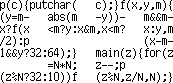

{kind=link}
John Tromp |
|  |

|
|
When I was still a PhD student, under the supervision of Paul Vitányi, I thought of doing a thesis on the game of connect-4. Instead, I ended up working on distributed computing problems, and many other topics in my PhD research, which resulted in this thesis.
Since the early 90s, I've been fascinated by recumbent bikes. Check out this picture of a Green Machine, a design concept that in 2005 has finally been revived in a slightly different form. Since 2000, I am the proud owner of an Optima Condor. and got myself listed on .
Weather permitting, I love to go inline skating on my Rollerblade Tempest 110.
Here's a picture of the 13 story apartment building, that I lived in '98-'06. (Not quite as tall as the Kingdom Tower:-) It's right next to the Flevopark, as can be seen on all these maps: www.multimap.com, maps.google.com.
I like to think of cute algorithms (or take other peoples') and write them in the absolute minimum amount of code, greatly obfuscating them in the process. See my programming pearls.
See my CD collection to get an idea of my taste in music.

%!PS % -John Tromp (http://www.cwi.nl/~tromp/)
42 42 scale 7 9 translate .07 setlinewidth .5 setgray/c{arc clip fill
setgray}def 1 0 0 42 1 0 c 0 1 1{0 3 3 90 270 arc 0 0 6 0 -3 3 90 270
arcn 270 90 c -2 2 4{-6 moveto 0 12 rlineto}for -5 2 5{-3 exch moveto
9 0 rlineto}for stroke 0 0 3 1 1 0 c 180 rotate initclip}for showpage
(when using ghostview make sure
to turn off Antialias under State/gv Options or the colors won't show
correctly)
{kind=link}
{kind=link}
{kind=link}
{kind=link}
{kind=link}